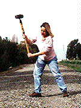
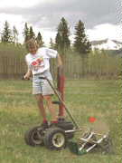

Seismic Sources
Sources of seismic energy come in a variety of sizes and shapes. Virtually anything that impacts, or causes motion on, the surface of the earth will be a source of seismic energy. Unfortunately, most sources are uncontrollable, such as road traffic, wind (this causes noise by making bushes and trees move), aircraft, people walking, etc. For our experiments, we would like to control the source of the ground motion. In this discussion, we will restrict our examples to those sources most commonly used in near-surface (i.e., environmental and engineering) investigations.
Three types of sources are most commonly used for both refraction and reflection investigations of the near surface.

- Impact Sources - Sources that generate seismic energy by impacting the surface of the Earth are probably the most common type employed. Although impact sources can be rather sophisticated in their construction, the most commonly used type of impact source is a simple sledgehammer. In this case, an operator does nothing more than swing the sledgehammer downward onto the ground. Instead of striking the ground directly, it is most common to strike a metal plate lying on the ground. The sledgehammer is usually connected to the recording system by a wire. The moment the sledgehammer strikes the plate, the recording system begins recording ground motion from the geophones.
The principle advantages to using a sledgehammer source are primarily
- Low Cost and
- Simple to operate and maintain.
The principle disadvantages of this source are
- It can be difficult to assure that the source is operated in a repeatable fashion,
- Operation is manually strenuous,
- Source outputs relatively small amounts of seismic energy. Therefore, it can be difficult to record reliable observations at great distances, and
- Source outputs seismic energy that tends to be low frequency in nature (i.e. this source generates a lot of surface waves).

- Gun Sources - Like impact sources, gun sources generate seismic energy by transferring the kinetic energy of a moving object into seismic energy. In this case, the moving object is a bullet or shot-gun slug. Some sources use blanks instead of bullets or slugs. In this case, energy is transferred from the column of air in the gun's barrel that is set in motion by the blank to the ground.
The source shown to the left is a 9-gauge shotgun mounted on a wheeled vehicle. In this case, a 2-oz. steel slug is fired into the ground. Most gun sources are more compact than the source shown to the left. Like the sledgehammer, gun sources must also be connected to the recording system so that you can begin recording ground motion from the geophones at the instant the slug or shell hits the ground.
The principle advantages of gun sources are
- Highly repeatable source,
- Energy imparted into the ground is larger than is possible from a sledgehammer, and
- Gun sources generally output higher-frequency energy. This helps to minimize surface wave generation.
The principle disadvantages of gun sources are
- Safety,
- Equipment is more bulky and expensive than simple impact sources, and
- Getting permission (permitting) to use this source may be more difficult.
- Explosive Sources - Explosive sources can impart a large amount of seismic energy into the ground given their relatively small size. These sources can vary in size and type from small blasting caps and shotgun shells to larger, two-phase explosives. All explosive sources are triggered remotely by a devise known as a blasting box. The blasting box is connected to both the explosive and the recording system. At the moment the box detonates the explosive, it also sends a signal to the recording system to begin recording ground motion from the geophones.
The principle advantages of explosive sources are
- Pound for pound, these types of sources impart the most amount of seismic energy into the ground of any of the sources described here,
- The energy tends to be very high frequency, and because the explosives are usually placed in a shallow borehole, it tends not to be contaminated by surface waves, and
- Explosive sources are very repeatable.
The principle disadvantages of explosive sources are
- Safety,
- Permitting. Landowners tend to be nervous about allowing the use of explosives on their property,
- Data acquisition using explosive sources is much slower than using impact or gun sources. This is primarily because boreholes must be drilled within which the explosives are to be placed, and
- Explosives tend to be expensive to acquire and maintain.
Seismology
- Simple Earth Model: Low-Velocity Layer Over a Halfspacepg 11
- Head Wavespg 12
- Records of Ground Motionpg 13
- Travel-time Curves for a Simple Earth Modelpg 14
- First Arrivalspg 15
- Determining Earth Structure from Travel Timespg 16
- Derivation of Travel Time Equationspg 17
- High-Velocity Layer Over a Halfspace: Reprisepg 18
- Picking Times of Arrivalspg 25
- Wave Propagation with Multiple Horizontal Layerspg 26
- Travel Time Curves from Multiple Horizontalpg 27
- Hidden Layerspg 28
- Head Waves from a Dipping Layer: Shooting Down Dippg 29
- Head Waves from a Dipping Layer: Shooting Up Dippg 30
- A Field Procedure for Recognizing Dipping Bedspg 31
- Estimating Dips and Depths from Travelpg 32